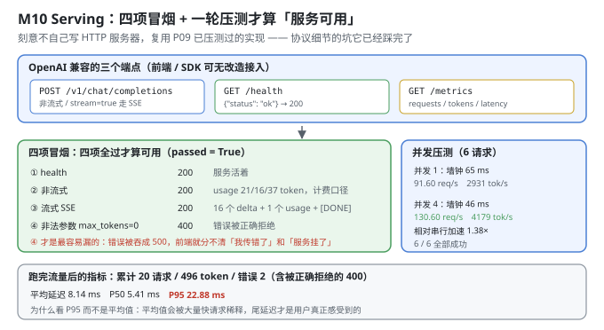
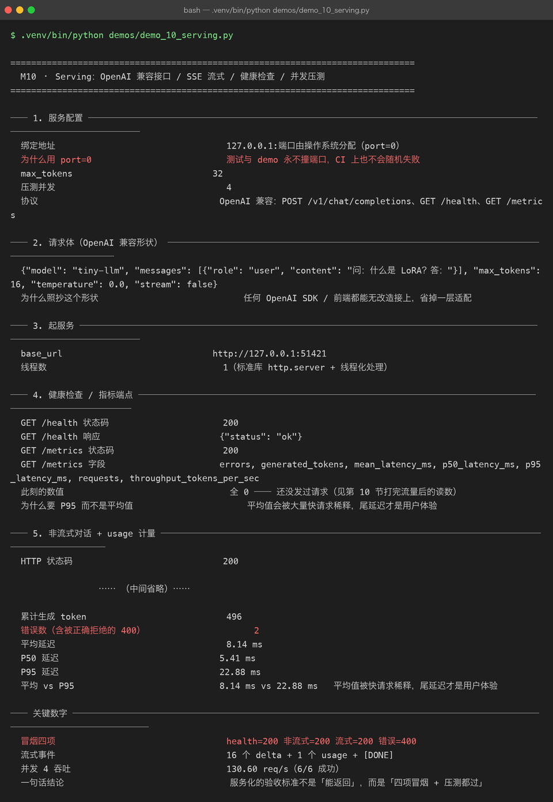

Milestone 10 — Serving：OpenAI 兼容接口 / SSE 流式 / 健康检查 / 并发压测
M08/M09 把模型变成了"能快速推理的东西"。这一章把它变成一个服务——别人能用一行 curl、一个 OpenAI SDK 调起来的东西。
本章有一个刻意的选择：不自己写 HTTP 服务器，直接复用 P09 已经压测过的实现。协议层的坑（分块传输、SSE 格式、并发线程、状态码）它已经踩完了。这也是"AI 工程"和"从零造轮子"的分界：协议细节不该在小项目里重造。
1. Why：服务化的验收标准不是"能返回"
一个 demo 化的服务，最常见的验收方式是"我 curl 了一下，有输出"。但这对上线毫无意义。真正的验收标准是四项冒烟 + 一轮压测，缺一项都不算服务可用：
- health：服务活着吗？（进程在 ≠ 服务可用）
- 非流式：正常请求能不能返回，
usage对不对？（计费口径） - 流式：SSE 事件拼起来是不是完整答案，末尾有没有
[DONE]？（前端体验） - 错误路径：非法参数必须返回 4xx，而不是 500。
第 4 项是最容易漏、也最容易出事的：如果错误被吞成 500，前端就分不清"我传错了参数"和"服务挂了"。 前者应该提示用户改，后者应该重试。混在一起，前端就只剩"弹个红色报错"。
2. Design：协议照抄 OpenAI
POST /v1/chat/completions # 非流式 & stream=true（SSE）
GET /health # {"status": "ok"}
GET /metrics # requests / generated_tokens / latency 分位为什么照抄 OpenAI 的形状：任何 OpenAI SDK 或前端组件都能无改造接上——省掉一整套适配层。请求体和响应字段名（messages / max_tokens / finish_reason / usage / [DONE]）全部对齐。协议是一种"接口的通用语"，自己发明一套只会增加接入成本。
port=0：让操作系统分配端口，测试和 demo 永远不会撞端口，CI 上也不会随机失败。这是"可重复"的一个小但关键的设计。
流式（SSE）的交付形状：
data: {"content": "-"}
data: {"content": "个"}
...
data: {"usage": {...}} # 只在 stream_options.include_usage=true 时出现
data: [DONE]
3. Real-run evidence（来自 demos/out/demo_10_serving_terminal.txt）

3.1 服务配置
绑定地址 127.0.0.1:端口由操作系统分配（port=0）
max_tokens 32
压测并发 4
协议 OpenAI 兼容：POST /v1/chat/completions、GET /health、GET /metrics3.2 请求体（OpenAI 兼容形状）
{"model": "tiny-llm", "messages": [{"role": "user", "content": "问：什么是 LoRA？答："}], "max_tokens": 16, "temperature": 0.0, "stream": false}3.3 健康检查 / 指标端点
GET /health 状态码 200
GET /health 响应 {"status": "ok"}
GET /metrics 状态码 200
GET /metrics 字段 errors, generated_tokens, mean_latency_ms, p50_latency_ms, p95_latency_ms, requests, throughput_tokens_per_sec
此刻的数值 全 0 —— 还没发过请求"此刻全 0"是有意的：它说明 /metrics 是运行时指标，不是静态配置。第 10 节打完流量后会再读一次——那时数字才对得上 (§3.9)。
为什么要有 P95 而不是只有平均值：平均值会被大量快请求稀释。如果 20 个请求里 19 个是 5 ms、1 个是 200 ms，平均值只有 14.75 ms——看起来"挺快"，但那 1 个用户等了 200 ms。尾延迟才是用户体验。
3.4 非流式对话 + usage 计量
HTTP 状态码 200
finish_reason length
content '-个答：什么是 token token token token token '
usage {"prompt_tokens": 21, "completion_tokens": 16, "total_tokens": 37}finish_reason: length 说明生成长度撞到了 max_tokens=16（不是模型自然结束）。这个字段是必需的：它让前端知道"答案是不是被截断了"，否则用户会以为模型就这么点话。
usage = 21 + 16 = 37，必须准确：计费、限流、成本核算全依赖它。差一个 token 就是账目问题。
3.5 流式（SSE）：逐 token 交付 + 末尾 usage
HTTP 状态码 200
总事件数 19
含内容的 delta 事件数 16
含 usage 的事件数 1 stream_options.include_usage 打开时才有
是否收到 [DONE] 结束标记 True
事件拼起来 = 完整答案 '-个答：什么是 token token token token token '
event 1: data: {"content": "-"}
event 2: data: {"content": "个"}
event 3: data: {"content": "答"}
event 4: data: {"content": "："}
event 5: data: {"content": "什么是"}19 = 16 个内容 delta + 1 个 usage + 2 个（[DONE] 与可能的空事件）。三个断言要一起看：
- 16 个 delta 事件 ⇒ 逐 token 交付（不是一次性发完）；
- 1 个 usage 事件 ⇒ 流式也能计费（否则流式请求就没法算钱）；
[DONE]为 True ⇒ 前端知道"流结束了"，不会一直挂着等。
最关键的一行是"事件拼起来 = 完整答案"——它证明 SSE 的分帧没有丢字、没有重复。如果实现里有竞态（比如多线程写同一个 socket），这一步就会拼不出原文。
3.6 错误路径：非法参数必须返回 4xx
max_tokens=0 的状态码 400
错误体 {"error": {"message": "max_tokens 必须大于 0", "type": "invalid_request_error"}}这是整个服务里最容易被忽略的一段。 很多实现遇到 max_tokens=0 会直接崩在内部逻辑上，抛异常 → 框架兜底 → 500。前端拿到 500 只能"全部重试"，而这明明是一个"用户传错了，改一下就能成功"的请求。
400 + invalid_request_error 才是正确的语义：是请求的问题，不是服务的问题。
3.7 一键冒烟：四项全过才算服务可用
health 状态码 200
非流式状态码 200
流式 token 事件 / usage 事件 8 / 1
流式是否有 [DONE] True
非法参数状态码 400
冒烟是否整体通过 Truesmoke_test 把前面四件事串成一条命令，返回一个布尔值。这个布尔值的意义是：它可以进 CI。任何时候重构服务代码，跑一次冒烟就知道有没有破坏契约。
3.8 并发压测
并发 1：请求 / 成功 6 / 6
墙钟 / 单请求（顺序） 65 ms / 11 ms
吞吐 91.60 req/s 2931.4 tok/s
相对串行的加速 1.00×
并发 4：请求 / 成功 6 / 6
墙钟 / 单请求（顺序） 46 ms / 11 ms
吞吐 130.60 req/s 4179.3 tok/s
相对串行的加速 1.38×读这张表要先理解"墙钟"和"单请求"是两个不同的量：
- 单请求耗时（顺序）都是 11 ms：说明并发没有劣化单个请求的质量（没有互相抢 CPU 到变慢）。
- 墙钟从 65 ms 降到 46 ms：并发 4 让 6 个请求的总完成时间缩短。
- 吞吐从 91.60 → 130.60 req/s（1.38×）。
为什么不是 4×？ 因为 Python 有 GIL——标准库 http.server 用线程处理并发，但计算密集的部分（numpy 的矩阵乘）仍然受 GIL 影响。而且这里的模型太小，请求里大部分时间花在 HTTP 开销上（起连接、解析、写 socket），真正的计算只占一小部分。所以 1.38× 是"HTTP 并发 + 小模型"的真实值，不是"理论上应该 4×"的失败。
6/6 全部成功这一列同样重要：并发下没有任何请求失败/超时，说明实现是线程安全的（每个请求共享同一个模型但只读，没有写竞争）。
3.9 打完流量后的运行指标
累计请求数 20
累计生成 token 496
错误数（含被正确拒绝的 400） 2
平均延迟 8.14 ms
P50 延迟 5.41 ms
P95 延迟 22.88 ms这一节是闭环：§3.3 里 /metrics 全 0，打完所有流量后再读，数字变成了 20 请求 / 496 token。
平均 8.14 ms vs P95 22.88 ms——相差 2.8 倍。
- P50 = 5.41 ms 说明"一半的请求很快"；
- P95 = 22.88 ms 说明"最慢的 5% 要等 22.88 ms"。
如果只看平均 8.14 ms，你会以为"这个服务稳定在 8 ms 左右"；实际上尾部的请求慢了近 3 倍。 这些尾部请求往往是"并发压力最大的那几个"——P95 是唯一能暴露这个的指标。 这就是 §2 里为什么要专门做分位数统计。
另外，"错误数 2（含被正确拒绝的 400）"——这 2 个错误是特意发的非法请求，被正确拒绝（400）。所以"有错误"不等于"服务坏了"，要看错误是 4xx（请求问题）还是 5xx（服务问题）。
4. 踩坑与反直觉发现
- "能返回"不等于"服务可用"。 验收标准是四项冒烟全过 + 压测通过。只 curl 一下看到输出，漏掉了 health、流式、错误码三件事。
- 错误被吞成 500 是最常见的服务缺陷。
max_tokens=0的正确响应是 400 + invalid_request_error，不是 500。500 会让前端失去"能不能重试"的判据。 - P95 22.88 ms vs 平均 8.14 ms——平均值骗人。 平均值被大量快请求稀释，长尾才决定体验。所以
/metrics必须输出分位数，不能只有 mean。 - 并发 4 只加速 1.38× 不是 bug。 原因有二：Python GIL 限制了 numpy 之外的多线程并行；且小模型的请求里 HTTP 开销占比很高，真正能并行的计算部分很小。这个数字要如实报告，不能拿"理论 4×"去解释。
finish_reason和usage是"服务契约"的一部分，不是可选项。finish_reason=length告诉前端答案被截断；usage是计费口径。缺了它们，服务就只是"能吐字"，不是"能接入"。port=0是一个被低估的工程细节。 固定端口在 CI 上会随机失败（端口被占），port=0让操作系统分配——小选择，但决定了测试能不能稳定跑。- 流式的"事件拼接 == 完整答案"是并发安全的判据。 多线程写 SSE 时如果有竞态，这一步会拼出乱序或丢字——它是唯一能抓住这类 bug 的检查。
5. Conclusion
- 端点：
POST /v1/chat/completions（流式/非流式）、GET /health、GET /metrics；port=0由 OS 分配，永不撞端口。 - 非流式：200 /
finish_reason=length/usage= 21 + 16 = 37 token。 - 流式 SSE：16 个 delta + 1 个 usage，含
[DONE]，事件拼接 == 完整答案。 - 错误路径：
max_tokens=0→ 400（invalid_request_error），而非 500。 - 冒烟：health 200 / 非流式 200 / 流式 200（8 delta + 1 usage + DONE）/ 错误 400 ⇒ 整体通过 True。
- 压测：并发 1 → 91.60 req/s、并发 4 → 130.60 req/s（1.38×），6/6 全部成功，单请求耗时稳定 11 ms。
- 运行指标：累计 20 请求 / 496 token / 2 个被正确拒绝的 400；平均 8.14 ms、P50 5.41 ms、P95 22.88 ms。
- 一句话结论：服务化的验收标准不是"能返回"，而是"四项冒烟 + 压测都过"。
6. Code map
| 文件 | 职责 |
|---|---|
src/tiny/serve.py | build_engine / serve_model / chat_payload / _post（捕获 HTTPError 读错误体）/ chat_completion / stream_completion / health / metrics / smoke_test / load_test / ServingSession |
P09 src/ie/serve.py | OpenAI 兼容的 http.server + SSE 实现（协议细节复用） |
P09 src/ie/engine.py | 指标统计（mean / P50 / P95 / throughput） |
demos/demo_10_serving.py | 10 节：配置 / 请求体 / 起服务 / health+metrics / 非流式 / 流式 / 错误 / 冒烟 / 压测 / 流量后指标 |
demos/out/demo_10_serving_terminal.txt | 本章所有数字的来源 |
assets/serving.svg | 三个端点 + 四项冒烟 + 压测 + 指标 |
assets/term-10-serving.png | 真实运行截图 |
7. Version line
v0.9 → v0.10，服务化落地并验收。实测：OpenAI 兼容三端点 + port=0；非流式 200 / usage 21+16=37；SSE 16 delta + 1 usage + [DONE]、事件拼接一致；错误路径 max_tokens=0 → 400；冒烟四项全过（200/200/200/400）；压测并发 1 91.60 req/s → 并发 4 130.60 req/s（1.38×），6/6 成功；累计 20 请求 / 496 token，平均 8.14 ms / P50 5.41 ms / P95 22.88 ms。配图 1 张手写 SVG + 1 张真实终端截图。